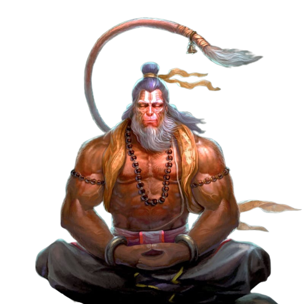

for audio/video
श्रीगुरु चरन सरोज रज, निज मनु मुकुरु सुधारि।
बरनऊं रघुबर बिमल जसु, जो दायकु फल चारि।।
बुद्धिहीन तनु जानिके, सुमिरौं पवन-कुमार।
बल बुद्धि बिद्या देहु मोहिं, हरहु कलेस बिकार।।
चौपाई :
श्री हनुमान जी! आपकी जय हो। आपका ज्ञान और गुण अथाह है। हे
कपीश्वर! आपकी जय हो! तीनों लोकों, स्वर्ग लोक, भूलोक और पाताल लोक में आपकी कीर्ति
है।
जय हनुमान ज्ञान गुन सागर।
जय कपीस तिहुं लोक उजागर।।
हे पवनसुत अंजनी नंदन! आपके समान दूसरा बलवान नहीं है।
रामदूत अतुलित बल धामा।
अंजनि-पुत्र पवनसुत नामा।।
हे महावीर बजरंग बली!आप विशेष पराक्रम वाले है। आप खराब बुद्धि
को दूर करते है, और अच्छी बुद्धि वालों के साथी, सहायक है।
महाबीर बिक्रम बजरंगी।
कुमति निवार सुमति के संगी।।
आप सुनहले रंग, सुन्दर वस्त्रों, कानों में कुण्डल और घुंघराले बालों से सुशोभित हैं।
कंचन बरन बिराज सुबेसा|
कानन कुण्डल कुंचित केसा॥4॥
आपके हाथ में बज्र और ध्वजा है और कन्धे पर मूंज के जनेऊ की शोभा है।
हाथबज्र और ध्वजा विराजे|
कांधे मूंज जनेऊ साजै॥5॥
शंकर के अवतार! हे केसरी नंदन आपके पराक्रम और महान यश की संसार भर में वन्दना होती है।
शंकर सुवन केसरी नंदन|
तेज प्रताप महा जग वंदन॥6॥
आप प्रकान्ड विद्या निधान है, गुणवान और अत्यन्त कार्य कुशल होकर श्री राम के काज करने के लिए आतुर रहते है।
विद्यावान गुणी अति चातुर|
राम काज करिबे को आतुर॥7॥
आप श्री राम चरित सुनने में आनन्द रस लेते है। श्री राम, सीता और लखन आपके हृदय में बसे रहते है।
प्रभु चरित्र सुनिबे को रसिया|
राम लखन सीता मन बसिया॥8॥
आपने अपना बहुत छोटा रूप धारण करके सीता जी को दिखलाया और भयंकर रूप करके लंका को जलाया।
सूक्ष्म रूप धरि सियहिं दिखावा|
बिकट रूप धरि लंक जरावा॥9॥
आपने विकराल रूप धारण करके राक्षसों को मारा और श्री रामचन्द्र जी के उद्देश्यों को सफल कराया।
भीम रूप धरि असुर संहारे|
रामचन्द्र के काज संवारे॥10॥
आपने संजीवनी बूटी लाकर लक्ष्मण जी को जिलाया जिससे श्री रघुवीर ने हर्षित होकर आपको हृदय से लगा लिया।
लाय सजीवन लखन जियाये|
श्री रघुवीर हरषि उर लाये॥11॥
श्री रामचन्द्र ने आपकी बहुत प्रशंसा की और कहा कि तुम मेरे भरत जैसे प्यारे भाई हो।
रघुपति कीन्हीं बहुत बड़ाई।
तुम मम प्रिय भरत सम भाई॥12॥
श्री राम ने आपको यह कहकर हृदय से लगा लिया की तुम्हारा यश हजार मुख से सराहनीय है।
सहस बदन तुम्हरो जस गावैं।
अस कहि श्रीपति कंठ लगावैं॥13॥
यमराज, कुबेर आदि सब दिशाओं के रक्षक, कवि विद्वान, पंडित या कोई भी आपके यश का पूर्णतः वर्णन नहीं कर सकते।
जम कुबेर दिगपाल जहां ते।
कबि कोबिद कहि सके कहां ते॥15॥
आपने सुग्रीव जी को श्रीराम से मिलाकर उपकार किया, जिसके कारण वे राजा बने।
तुम उपकार सुग्रीवहि कीन्हा|
राम मिलाय राजपद दीन्हा॥16॥
आपके उपदेश का विभिषण जी ने पालन किया जिससे वे लंका के राजा बने, इसको सब संसार जानता है।।
तुम्हरो मंत्र विभीषण माना।
लंकेस्वर भए सब जग जाना॥17॥
हे महावीर बजरंग बली!आप विशेष पराक्रम वाले है। आप खराब बुद्धि
को दूर करते है, और अच्छी बुद्धि वालों के साथी, सहायक है।
महाबीर बिक्रम बजरंगी।
कुमति निवार सुमति के संगी।।
हे महावीर बजरंग बली!आप विशेष पराक्रम वाले है। आप खराब बुद्धि
को दूर करते है, और अच्छी बुद्धि वालों के साथी, सहायक है।
महाबीर बिक्रम बजरंगी।
कुमति निवार सुमति के संगी।।
हे महावीर बजरंग बली!आप विशेष पराक्रम वाले है। आप खराब बुद्धि
को दूर करते है, और अच्छी बुद्धि वालों के साथी, सहायक है।
महाबीर बिक्रम बजरंगी।
कुमति निवार सुमति के संगी।।
हे महावीर बजरंग बली!आप विशेष पराक्रम वाले है। आप खराब बुद्धि
को दूर करते है, और अच्छी बुद्धि वालों के साथी, सहायक है।
महाबीर बिक्रम बजरंगी।
कुमति निवार सुमति के संगी।।
हे महावीर बजरंग बली!आप विशेष पराक्रम वाले है। आप खराब बुद्धि
को दूर करते है, और अच्छी बुद्धि वालों के साथी, सहायक है।
महाबीर बिक्रम बजरंगी।
कुमति निवार सुमति के संगी।।
हे महावीर बजरंग बली!आप विशेष पराक्रम वाले है। आप खराब बुद्धि
को दूर करते है, और अच्छी बुद्धि वालों के साथी, सहायक है।
महाबीर बिक्रम बजरंगी।
कुमति निवार सुमति के संगी।।
हे महावीर बजरंग बली!आप विशेष पराक्रम वाले है। आप खराब बुद्धि
को दूर करते है, और अच्छी बुद्धि वालों के साथी, सहायक है।
महाबीर बिक्रम बजरंगी।
कुमति निवार सुमति के संगी।।
हे महावीर बजरंग बली!आप विशेष पराक्रम वाले है। आप खराब बुद्धि
को दूर करते है, और अच्छी बुद्धि वालों के साथी, सहायक है।
महाबीर बिक्रम बजरंगी।
कुमति निवार सुमति के संगी।।
हे महावीर बजरंग बली!आप विशेष पराक्रम वाले है। आप खराब बुद्धि
को दूर करते है, और अच्छी बुद्धि वालों के साथी, सहायक है।
महाबीर बिक्रम बजरंगी।
कुमति निवार सुमति के संगी।।
हे महावीर बजरंग बली!आप विशेष पराक्रम वाले है। आप खराब बुद्धि
को दूर करते है, और अच्छी बुद्धि वालों के साथी, सहायक है।
महाबीर बिक्रम बजरंगी।
कुमति निवार सुमति के संगी।।
हे महावीर बजरंग बली!आप विशेष पराक्रम वाले है। आप खराब बुद्धि
को दूर करते है, और अच्छी बुद्धि वालों के साथी, सहायक है।
महाबीर बिक्रम बजरंगी।
कुमति निवार सुमति के संगी।।
हे महावीर बजरंग बली!आप विशेष पराक्रम वाले है। आप खराब बुद्धि
को दूर करते है, और अच्छी बुद्धि वालों के साथी, सहायक है।
महाबीर बिक्रम बजरंगी।
कुमति निवार सुमति के संगी।।
दोहा :
पवन तनय संकट हरन, मंगल मूरति रूप।
राम लखन सीता सहित, हृदय बसहु सुर भूप।।
go back
to dashboard